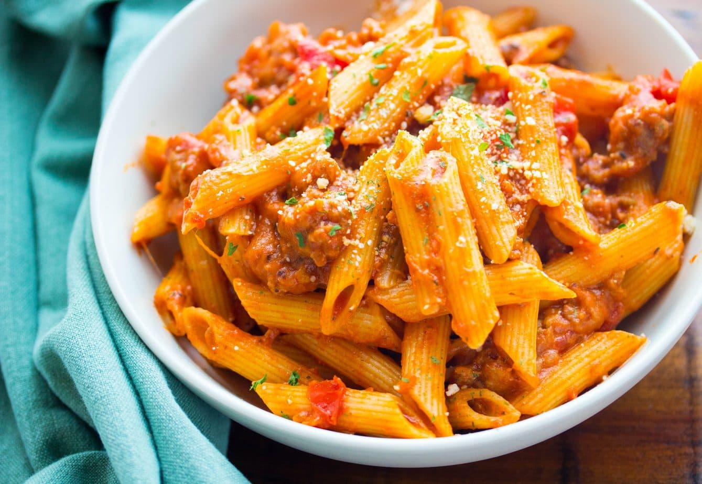

High Protein Pasta

Description
Ditch the traditional pasta noodles and opt for a high protein multigrain or chickpea pasta instead!
Ingredients
- high protein penne pasta
- frozen peas
- goat cheese
- green olives
- chicken sausage
- arrabbiata sauce
- oregano
- red pepper flakes
- garlic powder
- ground black pepper
- grated Parmesan cheese
- chili oil
Steps
- Bring a medium-sized pot of water to a boil.
- While waiting for your water to boil, slice the chicken sausage into rounds and cook in a lightly oiled frying pan.
- Once the water has reached a roaring boil, pour the penne noodles and frozen peas into the water and cook for approx. 8 minutes.
- Once cooked, pour the pasta and peas through a strainer and return them to the pot. Cover with sauce and heat.
- Crumble the goat cheese into the pot and stir into the pasta.
- Add the seasonings to the pot and mix.
- Transfer the pasta to a bowl and top with the desired amount of Parmesan cheese. For an extra kick drizzle some chili oil on top.
- Enjoy!